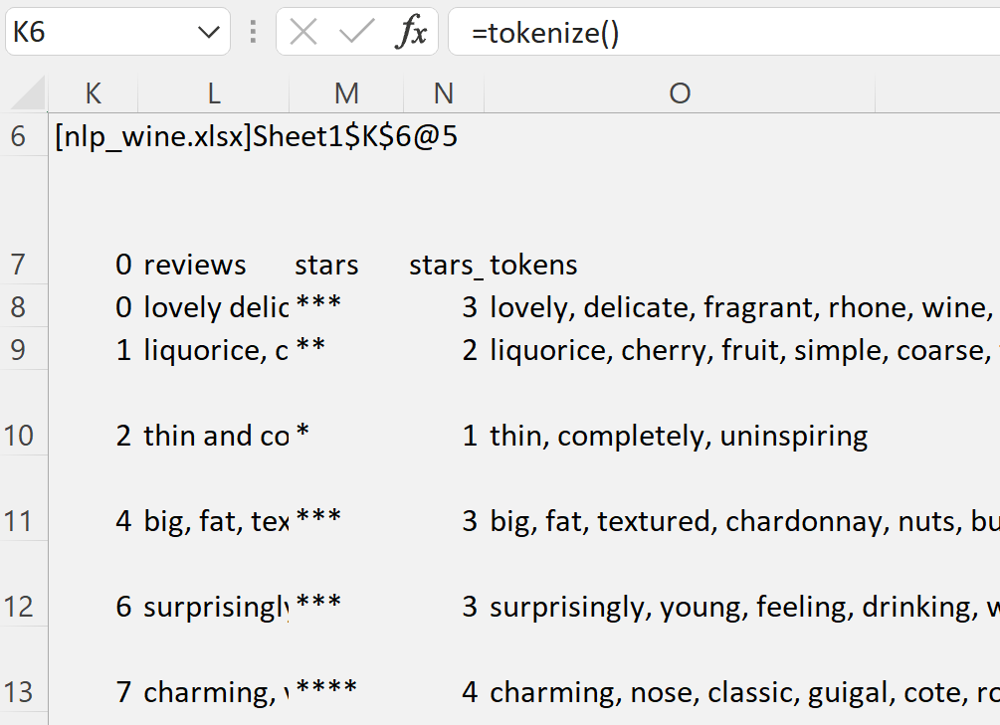

NLP with Excel and Python¶
How can Excel help in developing an NLP application? By providing its flexible and simple interface to visualize each step, from pre-processing to the final model!
Warning
The functionality shown requires a premium licence. See Licensing
Tokenizing Text and Creating a Word Counter¶
In this tutorial we will start exploring NLP with Python and Excel using nltk webtext corpora on wine reviews. This data is an extract of wine reviews from the winediaries.com
We will build a simple tokenizer and word frequency counter.
Note
All the Python code and Excel files shown are available from github in the xlslim-code-samples repo.
- Below we explore how to:
Get and Clean Text Data¶
We will use a dataset that comes with the nltk library. If you have not yet done so, install the nltk library, import it, and then download the resources using the download() method. We then load raw data from wine.txt and store it as list of sentences by splitting on new line. Since the raw data contains the number of stars attached to the review in the same sentence, we access it by splitting the sentences on space.
get_data() method is implemented and registered in Excel as nlp_wine.py module.
import re
from collections import Counter
import pandas as pd
import nltk
from nltk.tokenize import word_tokenize
from nltk.corpus import webtext
#nltk.download("webtext")
#nltk.download("punkt)
#nltk.download('stopwords')
stopwords = set(nltk.corpus.stopwords.words('english'))
additional_stopwords = {"a", "i", "yet", "if", "bit"}
stopwords.update(additional_stopwords)
def get_data() ->pd.DataFrame:
# Make sure to run nltk.download if you have not done so already
raw_sentences = re.split("\n", webtext.raw("wine.txt"))
df = pd.DataFrame(data=raw_sentences, columns=["reviews"])
df['stars'] = df['reviews'].apply(lambda x: x.rsplit(" ")[-1])
return df
In Excel you would register the module with this method and call it as shown in the image below:

After inspecting the data in Excel, we decide to write a method to clean it. This method can accept the dataframe from the Excel handle, and calls get_data() if no arguments are passed.
Note
We make some assumptions on how to handle reviews with several “*”s in the brackets.
def clean_data(df:pd.DataFrame=None) -> pd.DataFrame:
if df is None:
df = get_data()
# After inspecting data in Excel we decide to clean it as following:
# Make reviews lowercase
df['reviews'] = df['reviews'].apply(lambda x: x.lower())
# Remove the part of review extracted as stars from the reviews text
df['reviews'] = df['reviews'].apply(lambda x: x.replace(x.rsplit(" ")[-1], ""))
# Clean up stars column of any captured words
df['stars'] = df['stars'].apply(lambda x: ''.join([c for c in x if c in ['*','(',')']]))
# Remove records with no stars
df['valid'] = df['stars'].apply(lambda x: True if x.find("*")>-1 else False)
df = df.loc[df['valid']]
# Remove records where review is less than 10 chars long
df = df.loc[df['reviews'].str.len()>10]
# Map stars to the number
df['stars_num'] = df['stars'].apply(lambda x: len(x)-3+0.5 if x.find("(")>-1 else len(x))
return df[['reviews','stars','stars_num']]
To access this method in Excel, save the Python file and re-run the command to register the module. Then, call it and view the handle it returns using ViewPyObject()
=ViewPyObject(E3)
{kind=link}
Tokenize Reviews Text¶
Using Excel is easy to inspect the output of clean_data() method. We are satisfied that the data is now ready to be parsed into tokens. In addition to parsing sentences, we will also remove punctuation and stop-words. Many stop-words are provided by the nltk library, but we add a few more. Since lists cannot be displayed in the dataframe returned to Excel, we return its string representation. From Excel, working with this string has the same effect as working with a list.
Note
If the dataframe contains values with list datatypes, these will not be accessible in Excel. Cast list to strings to access their values in Excel.
def tokenize(df:pd.DataFrame=None) ->pd.DataFrame:
if df is None:
df = clean_data(get_data())
# Add a column with tokenized reviews where we remove punctuations
# Also remove stop words that are defined globally
# Because we cannot display a list in a dataframe we return tokens as string
df['tokens'] = df['reviews'].apply(lambda x: ", ".join([w for w in word_tokenize(x) if w.isalpha()
and w not in stopwords]))
return df
After saving the Python module, we can re-register it in Excel and access the output of this method from the returned handle:
{kind=link}
Build a Word Frequency Counter¶
We are now ready to build a word counter. Let’s write a method to accept a dataframe and an optional parameter for the number of stars to filter the reviews on. The default stars can be set to 5. The method returns a dictionary, which is conveniently saved in two Excel columns.
def get_word_freq(df:pd.DataFrame, stars_filter:int=5) -> dict:
# Filter the dataframe on the stars ensuring we have passed a good value
if stars_filter in Counter(df['stars_num']).keys():
df_filtered = df.loc[df['stars_num']==stars_filter]
cnt = Counter()
df_filtered['tokens'].apply(lambda x: cnt.update(x.split(", ")))
return dict(cnt.most_common())
else:
return dict()
Note
Note that since we pass a handle to get_word_freq() method, we need to call it from Excel as get_word_freq_from_handle() passing the handle to the tokenized dataframe as the first argument.
{kind=link}
Let’s for fun build a histogram chart from the dictionary. Note how the words distribution changes for various number of stars: higher rated wines tend to be described as complex, fine (chocolate and smoky for 6-star ranking). Lower rated wines tend to be described as quite good fruity wines.
{kind=link}
{kind=link}